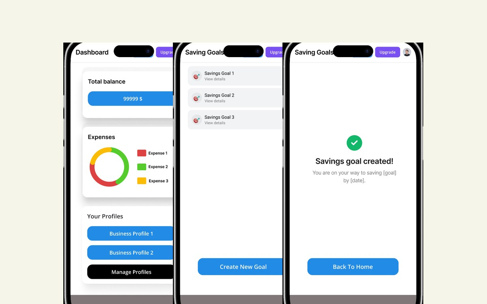
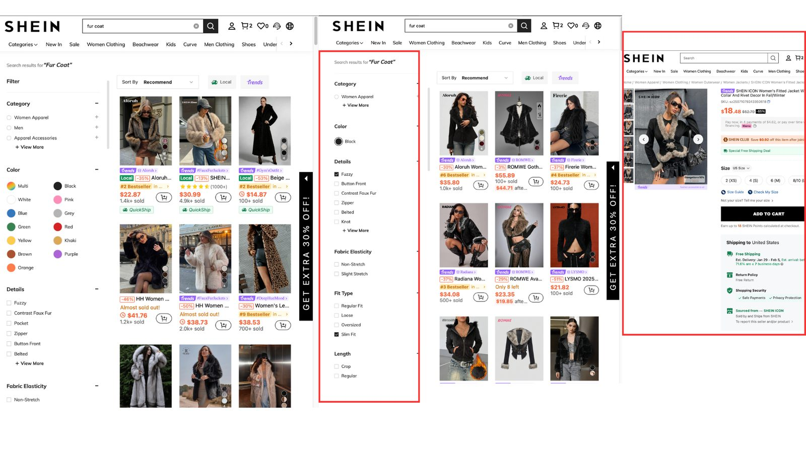
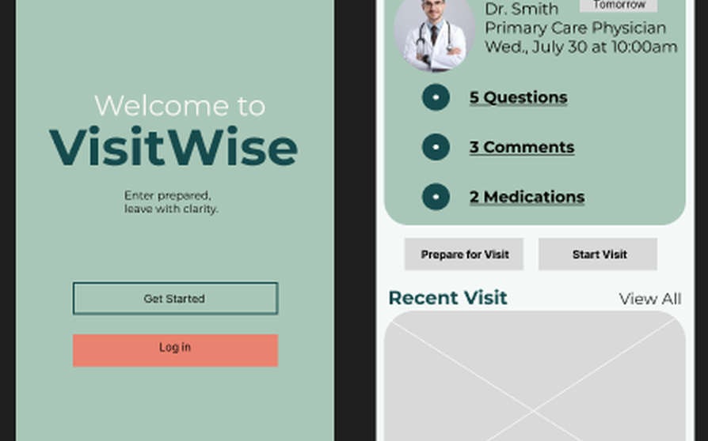
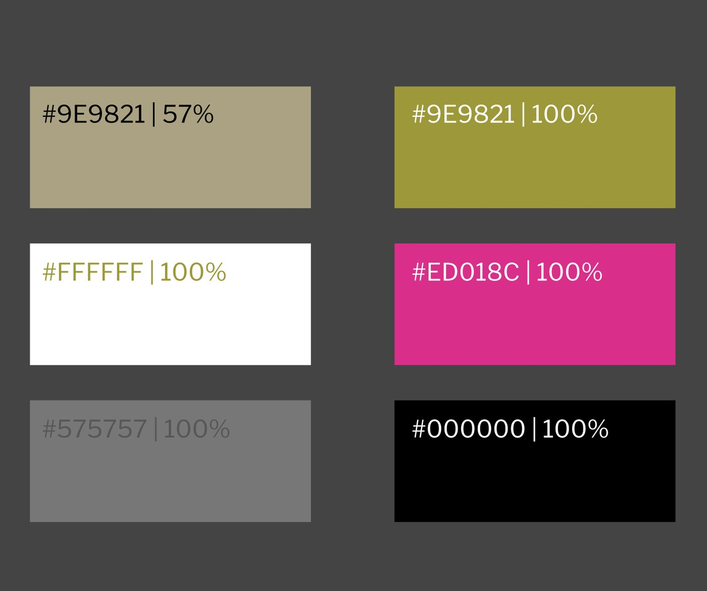
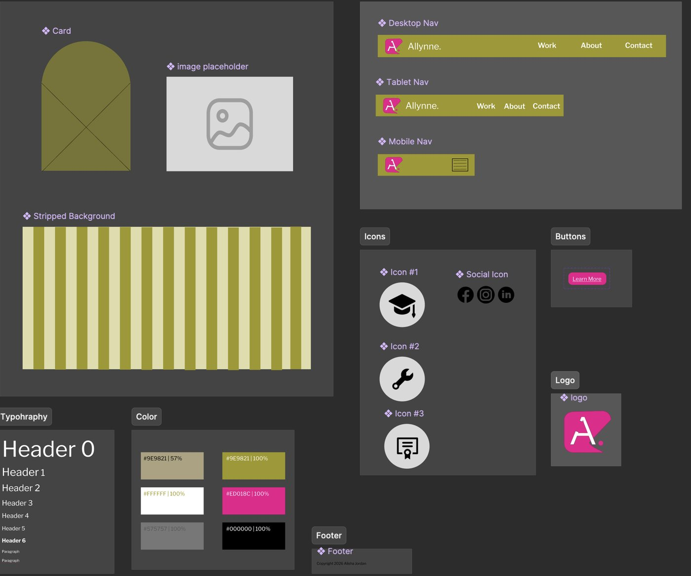
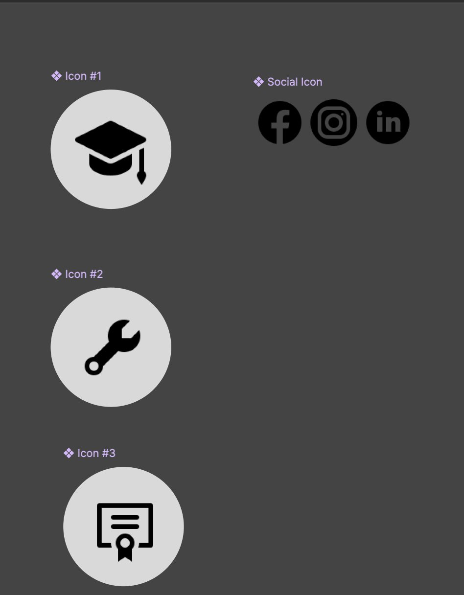

Finity
A personal finance app for young professionals. I ran moderated sessions with four participants across four task flows, then turned what went wrong into a prioritized set of changes.
Read the case study →
UX Researcher & Designer · Accessibility
I spent a year as a reporter, interviewing strangers on deadline and getting the story straight. Now I do the same thing for products: talk to the people using them, then write down exactly where they get stuck. From there I design the fix and test whether it actually worked. I just finished my master’s in HCI at DePaul, and accessibility is the part I care most about getting right.
Selected work
Each of these started with people rather than pixels. Two are graduate team projects where I led the research, one I ran solo end to end.

A personal finance app for young professionals. I ran moderated sessions with four participants across four task flows, then turned what went wrong into a prioritized set of changes.
Read the case study →

A solo evaluation of one of the most cluttered storefronts on the web. Three tasks, every step measured against Lewis and Rieman’s four questions, problems rated by severity.
Read the case study →

A mobile app that helps patients and caregivers walk into a medical appointment prepared. My graduate capstone: 12 survey responses, a heuristic review, and the usability score that told the truth.
Read the case study →
Design system
My own brand, designed end to end: palette, type, icon set, buttons, navigation and card components, built as a proper kit rather than a one-off logo. The site you are reading now runs on it.



How I work
Watching people solve the problem their own way, in their own space, before suggesting anything.
Task-based sessions, thinking aloud, satisfaction ratings, and follow-up questions that dig past “it was fine”.
Stepping through a flow as a first-time user would, then rating each breakdown by how badly it hurts.
Contrast, keyboard paths, and screen reader order. Currently working toward IAAP certification.